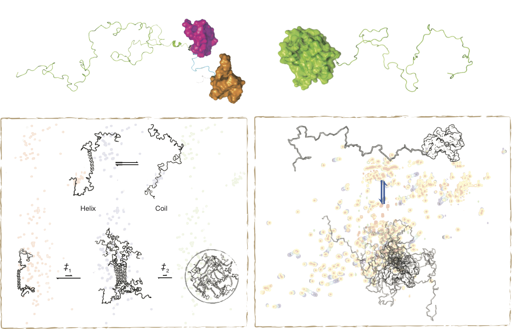
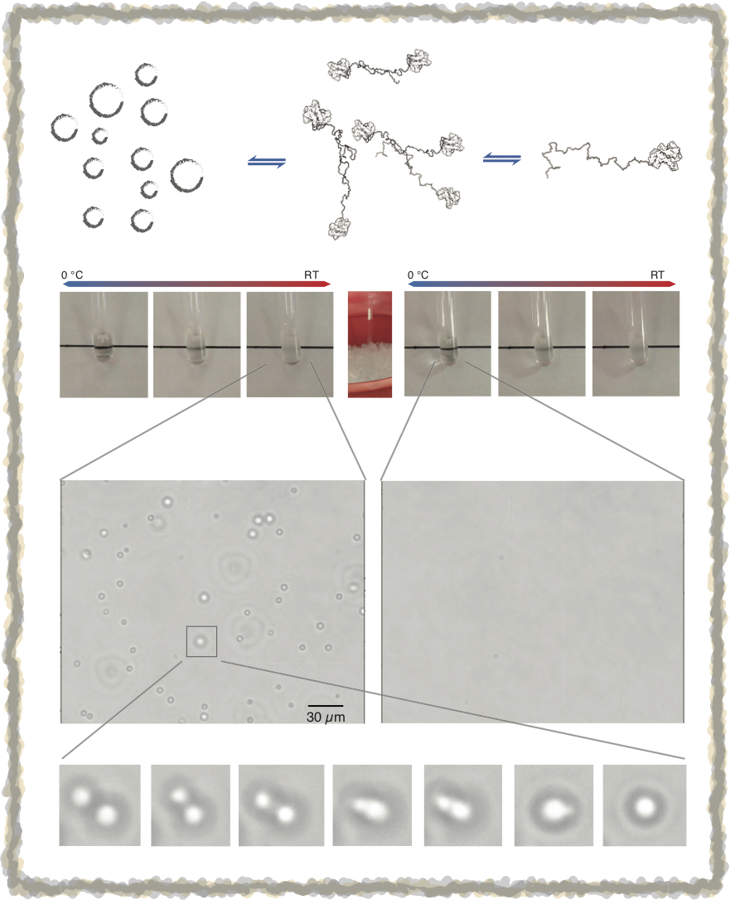

我們實驗室的研究主軸是「固有無序蛋白質」(intrinsically disordered proteins; IDPs)。什麼是固有無序蛋白質呢？這裡先簡短的介紹一下:
蛋白質是生物體中的必要組成成分，它參與了生命活動的每一個過程。最常見的一種蛋白質為酵素，它們負責催化生物化學反應，對於生物體的合成及代謝極為重要；此外，許多蛋白質和生物體的結構或機械性能有關，如肌肉中的肌動蛋白和肌凝蛋白；另外還有一些蛋白質參與細胞信號傳遞、細胞週期調控、免疫反應、細胞黏附等生命機制。蛋白質之所以有不同的功能，和其三維結構有相關，而蛋白質的三維結構，系由其胺基酸序列決定(也就是所謂的蛋白質折疊問題)。因此，要了解特定蛋白質在生物體內如何運作，可從其三維結構上的特徵來深入研究。然而蛋白質的三維結構無法直接以傳統光學的方法觀察，必須以間接的物理方法量測以建立原子模型，如：X-射線晶體學(X-ray crystallography)、核磁共振光譜學 (Nuclear Magnetic Resonance, NMR)或低溫電子顯微鏡(Cryo-electron microscopy)。蛋白質三度空間的立體結構，可以幫助我們了解它作用的機制、在生物體的功能、以及和不同蛋白質或配體之間的交互作用、以及設計藥物。
了解生物體內各種蛋白質的結構及其功能間的關係，一直是重要的研究課題；自從第一個蛋白質結構解出(1958, John Kendrew, myoglobin)至今，已有超過十萬筆蛋白質結構的資料存放在Protein Data Bank這個資料庫中。至今，也一共有至少9座諾貝爾獎頒發給研究特定生物分子結構與功能間的關係(1962 生醫獎; 1962、2003、2006、2009、2012 化學獎)或相關實驗方法(2002，2013，2017 化學獎)。然而，有一類蛋白質，在一般生理條件下並無固定結構，但因為蛋白質「序列」-「結構」-「功能」這個「三位一體」根深蒂固的觀念，在早年的結構生物學領域，它們一直被忽略。直到八○年代，研究人員開始注意到細胞內轉錄因子(transcription factor)雖無固定結構但仍有其功能；而在九○年代，科學家藉由多種生物物理的方法，確認了兩個和神經退化疾病高度相關的蛋白質，alpha-synuclein (和帕金森氏症有關)及protein tau(和阿茲海默症有關)，在正常生理條件下並沒有固定的立體結構。這些蛋白質的發現，引起了人們的重視，在九○年代，幾個重要的研究團體，從不同的角度，包括生物資訊學、蛋白質功能與特徵分類法、蛋白質折疊與錯誤折疊的觀念、以及核磁共振光譜學，了解到蛋白質不一定要先有結構才會有其功能。這類蛋白質統稱為固有無序蛋白質(intrinsically disordered proteins, IDPs)，它們在科學研究上帶來了新的挑戰。
現在我們已知真核細胞中大約有35%以上的蛋白質是完全不會折疊成特定的三維結構，而有50%以上的蛋白質至少有一區段(多於30個胺基酸)是沒有結構的。這類蛋白質本身的易變性成為一些生物化學反應的基本要素，因為它們提供了更大範圍的結構選擇性，缺少特定的結構，反而使它們能與更多不同結構的蛋白質相結合。當固有無序蛋白質與其他蛋白質結合時，他們可能會改變自身的形狀，以便能夠與不同的蛋白質作用，並有可能按順序先後與目標蛋白結合，然後再進行分離。我們也漸漸了解到它們在生物分子辨識、信號傳遞、DNA轉譯及複製上皆扮演著極重要的角色。固有無序蛋白質除了在生物化學反應中具有重要性外，這類蛋白質也和許多疾病有關，如癌症(p53,BRCA1)、第二型糖尿病(amylin)、朊毒體疾病(prion)、心血管疾病(hirudin/thrombin)、肌萎縮性脊髓側索硬化症(TDP-43)。因此，了解一個固有無序蛋白質有什麼樣的結構傾向，和一個蛋白質為什麼會演化出沒有結構的區段以達到其生物功能，以及這類蛋白質和疾病間的關係，都是我們實驗室有興趣研究的課題。
簡言之，只要沒有結構，我們都有興趣，但我們目前的研究可歸納為以下三大主軸：
(一) 無序蛋白質的結構傾向和動力學特性 (DAS-IDP)
(二) 同種及不同種無序蛋白質之間的交互作用 (I-I-I)
(三) ---------------------- (CC-IDP)
Dynamics and Structure of Intrinsically Disordered Proteins
無序蛋白質並不是完全沒有結構，有些區段在高度動態的平衡下，會有短暫的二級結構出現，而這些結構，常常和它們的功能有關。我們利用了多種生物物理方法來研究這類蛋白質的結構傾向和動力學特性。其中又以核磁共振實驗為測量無序蛋白質結構特性最適合的方法，經由碳-13及氮-15的標定技術，不論該蛋白質有無固定三維構形，蛋白質分子中的每一個個原子的特性皆能被實驗量測。我們目前著手進行的研究主題包含TDP-43, Galectin-3, TTBK2, 和 Musashi-1，也有相關研究發表(著作)。

IDP-IDP Interaction
許多蛋白質必須要和其它蛋白質結合形成蛋白質複合體(Protein Complex)，才能有它的生物功能，這就是所謂的蛋白質第四級結構。蛋白質之間的作用，並不一定侷限於具有結構的部份。生化實驗已經發現，有一些蛋白質之間的結合，靠的是它們無序區段之間的作用，但沒有結構的兩個蛋白質是怎麼結合在一起的呢?這也是我們有興趣的主題之一。我們目前有幾組不同IDP之間的作用(如TDP-43和hnRNPA2)正在研究中。
除了不同種的無序蛋白質交互影響外，同種的無序蛋白質也會相互作用，其中最廣為人知的就是這種蛋白質在細胞內的不正常的堆集，這和許多神經退化性疾病(漸凍人症/TDP-43、帕金森氏症/alpha-synuclein、阿茲海默症/amyloid-beta) 有關。雖然無序蛋白質的堆集是許多疾病的主因，但有些無序蛋白質的聚集，卻是它們的功能所在。從近年的細胞生物學觀察中發現，無序區段常常是這些蛋白質形成帶有功能性無膜胞器(mambraneless organelle; 如: stress granule, nucleoli, cajal bodies)的主因。和致病堆集不一樣的是，這類的聚集是可逆的變化，而聚集的條件也和許多外在因素有關。這種反應稱之為蛋白質的液-液相分離(liquid-liquid phase separation; LLPS)。然而，是什麼樣的作用力造成蛋白質相分離還無一定論，這是我們的研究主題之一。除了研究LLPS的形成機制外，我們也有興趣了解這些無序蛋白質如何在細胞內調控「功能性」的自我聚集，目前也有細胞實驗在進行中。本實驗室相關的研究發表可至著作參考。

(相關研究尚未公開發表，歡迎有興趣的同學連絡實驗室主持人討論細節)